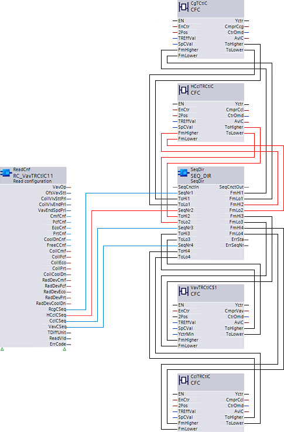
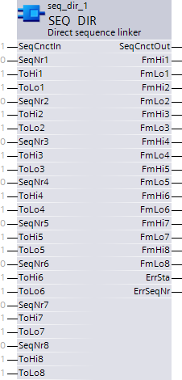

SEQ_REV:
功能块 SEQ_REV (FB477) 有助于以可编程序列互连控制块，即可以在序列中的任何位置分配所需的功能。该块用于Heating/humidification根据控制动作的方向（反向）。
功能
CTR 块在 PID_CTR 块的引脚和 SEQ_DIR 块上的引脚之间互连。 ReadCnf（读配置）用于定义序列。
Basics
多个 PID 控制器按顺序互连（基于负载、调制顺序切换），用于温度控制、湿度控制以及最终其他类型的控制。
控制器的一部分可以负责加热或加湿，另一部分负责冷却或除湿。每个控制器都控制一个特定的设备元件，包括散热器、加热线圈、风扇，sequence being selectable over BACnet.
在控制程序中，将用于加热或加湿的控制器以及用于冷却或除湿的控制器分组，以提高理解并增加灵活性。

The interconnection of the Heating function is marked in red in the figure.
Block
- A pin group is reserved for interconnecting multiple links.
- The Sequence order is determined by a number.
加热：SEQLINK_REVERSE (SEQ_REV)
SeqCnctIn=实际序列号
冷却：SEQLINK_DIRECT (SEQ_DIR)
SeqCnctIn=实际序列号
如果多个 SeqNr 引脚具有相同的编号，则该元素将从序列中取出，并输出错误状态 [ErrSta]。

输入
Pin | E | O | Description |
SeqCnctIn | pa | – | 输入顺序连接 |
SeqNr1...8 | pa | – | 序列号 1...8 序号输入值 |
ToHi1...8 | pa | – | 到更高的邻居 1...8 记录输入值 |
ToLo1...8 | pa | – | 降低邻居 1...8 记录输入值 |
输出
Pin | E | O | Description | |
SeqCnctOut | a | – | 输出顺序连接 | |
FmHi1...8 | a | – | 到更高的邻居 1...8 | |
FmLo1...8 | a | – | 来自下邻居 1...8 | |
ErrSta | a | – | 故障状态。 输出值枚举 | |
1（是）。 | 发生错误 | |||
0（否） | 没有发生错误 | |||
ErrSeqNr | a | – | 错误序列号 输出值枚举 | |
引脚说明
Input values
Pin | Description | Data type | Value | Unit | Min. | Max. |
EN | 发布 | 布尔值 | 0 | – | 0 | 1 |
SeqCnctIn | 顺序连接输入 | 记录 | – | – | – | – |
SeqNr1...8 | 序列号X | 整数 | 0 | – | 0 | 8 |
ToHi1...8 | 到更高的邻居。 | 记录 | – | – | – | – |
ToLo1...8 | 来自下邻居 X | 记录 | – | – | – | – |
输出值
Pin | Description | Data type | Value | Unit | Min. | Max. |
ENO | 启用输出 | 布尔值 | 0 | – | 0 | 1 |
SeqCnctOut | 顺序连接输出 | 记录 | – | – | – | – |
FmHi1...8 | 来自更高的邻居。 | 记录 | – | – | – | – |
FmLo1...8 | 来自下层邻居 | 记录 | – | – | – | – |
ErrSta | 故障状态。 | 枚举 | 1 | – | 1 | 3 |
ErrSeqNr | 错误序列号 | 枚举 | 1 | – | 1 | 9 |
使用
该块用于互连冷却/dehumidification 扇区中的控制块。
过程响应
标准（参见General rules and information).
故障排除
可能的错误包括
- Controller not wired or ToHi and ToLo on SEQLINK is set to default:
- SeqNr 0 and unique ---> ok
- SeqNr 0 and multiple ---> ok
- SeqNr ≠ 0 and unique ---> ok
- SeqNr ≠ 0 and multiple ---> error
- Controller wired
- SeqNr 0 and unique ---> ok
- SeqNr 0 and multiple ---> ok
- SeqNr ≠ 0 and unique ---> ok
- SeqNr ≠ 0 and multiple ---> error
Online
两个具有相同编号的 SeqNr ---> 从序列中取出该元素（如何？）并输出 ErSta
新号码立即适用，而不仅仅是在重新启动后。
Offline
新的SeqLink被错误级联--->无反应
SeqLink 表示冷却，用于加热设定值